LUBRICATION STYLES
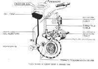 Yamaha Autolube Rotary Valve |
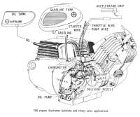 Yamaha YA6 Lubrication Rotary Valve |
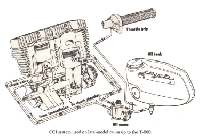 Suzuki CCI Lubrication Twin Cylinder |
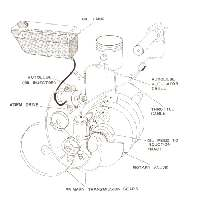 Yamaha Rotary Valve Lubrication |
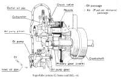 Kawasaki "Superlube" One Cylinder |
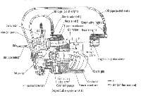 Kawasaki "Superlube" Two Cylinder |
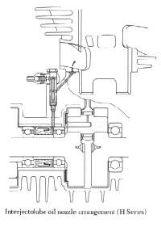 Kawasaki "Superlube" Three Cylinder |
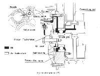 Kawasaki Injectolube |
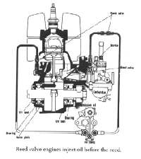 Reed Valve Lubrication |
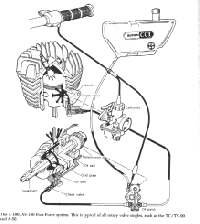 Suzuki TC-TS 90 Lubrication |
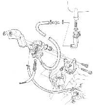 Honda NB50M |
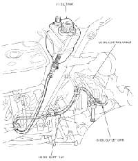 Honda TG50M Lubrication |
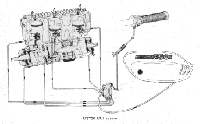 Suzuki GT750 Three Cylinder |
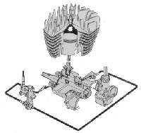 Suzuki Rotary Valve |

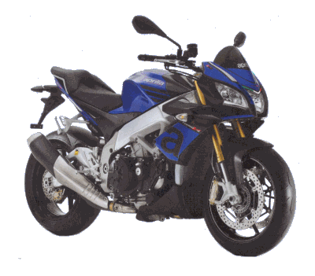 |
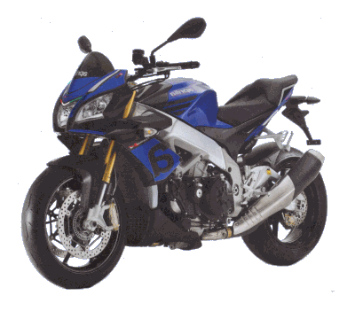 |
Copyright © 1999-2004 dansmc.com. All rights reserved.